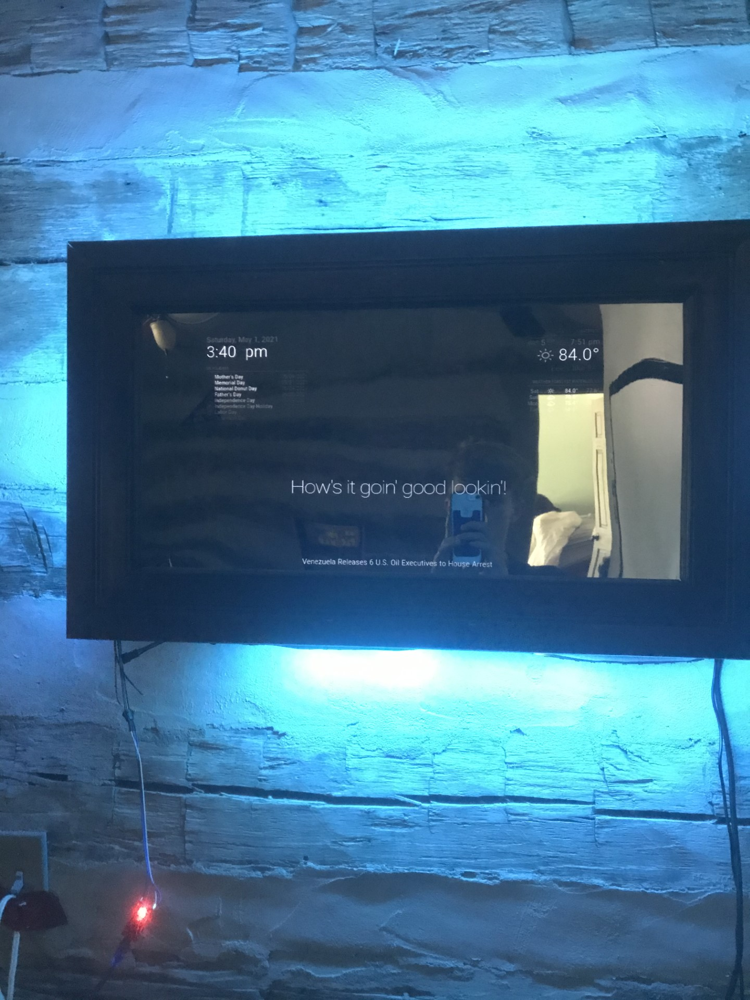

Welcome to my portfolio webpage!
Hello, my name is Morgan Stratton. I'm a Mechanical Engineering student
at Rose-Hulman Intstitute of Technology. I run Cross Country and Track
here at Rose, as well as being a member of the Human Powered Vehicle team
and the Treasurer of the American Society of Mechanical Engineers. I started
teaching myself how to code back during covid and made this website as a fun
and challenging project.
Since then I've continued to learn more about programming, but my attention
is now focused on engineering. I love designing systems, problem solving, and
figuring out how our world and the little mechanism within it operate.
I'm currently looking for internship oppurtunities that will give me a chance
to expand my understanding of engineering and provide quality work to an
innovative company.
Earth
*Click and drag to move around the planets*
*Arrows to zoom in/out*
x speed
*Disclaimer* Rotational Period is not accurate
Projects
Touch Sensitive Epoxy Resin Coffee Table
Last summer I decided to finally make an epoxy resin table. I had gotten sucked down the woodworking youtube rabbit-hole a few months before hand (shoutout to BlackTail Studios). This inspired me to make my own epoxy resin table, but seeing as I didn't have the skills nor the funds to make a full table I settled on a 14" x 16" coffee table.
The table-top is made from a fallen tree behind my house and 2 part deep pour epoxy resin. I took a cross section from the tree and split it down the middle to make a mirrored effect with the blue epoxy "river" flowing through the middle. To make room for the electronics on the underside of the table, I routered a series of channels and holes near the edge of the wood.
The electronics underneath the table are controlled by two Arduino Nanos that each control 25 LEDs and 10 ttp223 capacitative touch sensors. The code running on the Arduinos constantly change the color of the LEDs, but is only visible when a sensor is tripped by the touch of a hand or some metallic object.


Electromography Sensor with Arduino
I've done multiple small projects with a MyoWare EMG sensor with an arduino to control servos, LEDs, and relays.
The most fun project I've done that involved the EMG sensor was using the position of my arm to control the position of a metal rod. As I used my bicep to raise my forearm, a servo motor attachted to the metal rod would raise the rod, mimicing the movement of my arm. I learned how to convert data and use an Arduino to control Servo motors.
Magic Mirror
My first larger scale involving electronics was a "Magic Mirror" that was a computer monitor, behind a two way mirror, running a program running off a Raspberry Pi.
The mirror is inside a frame I made from some scrap wood from a house being rennovated down the street. The mirror displays the current date, upcomming holidays, weather, a nice message, and news headlines from the New York Times.
This Website!
I started this website as a project in learning how to combine HTML, CSS, and Javascript together to make a real website. I stumbled across a Javascript Library called 3JS and decided that it would be a perfect addition to this website.
After digging through tons of documnetation I was able to make the simulation running behind the about section. It took a lot of learning and patience to get to this point but now I'm so glad that I did because of how much web-development skills I learned.
I hope you enjoy playing around with the simulation, the distances and relative sizes of the planets are not to scale, but the orbital periods are!
Academics
I'm currently pursuing a Bachelors of Science degree in Mechanical Engineering with a minor in Spanish at Rose-Hulman Institute of Technology
Accomplishments & Awards:
Here's a link to my resume!